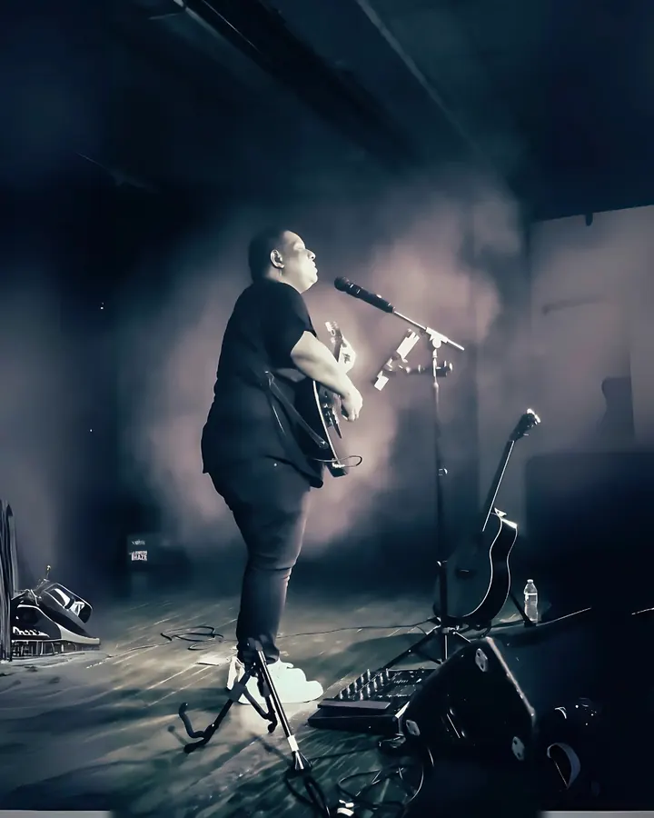
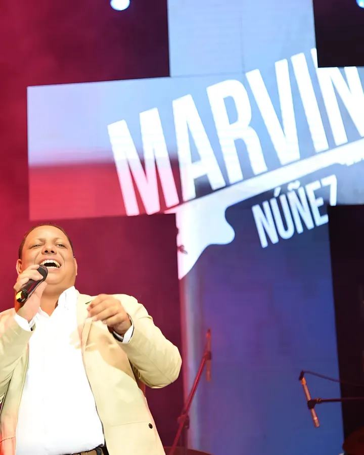
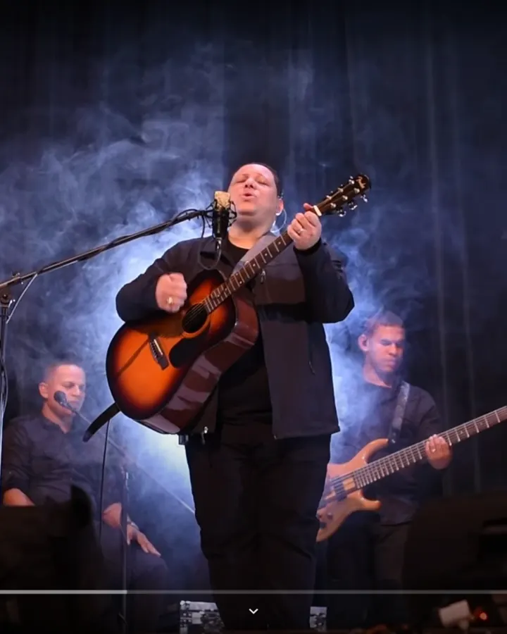

Cantautor Católico Dominicano
Marvin Núñez
Música que lleva el Evangelio a donde el corazón lo necesita.

Último lanzamiento
Mil Motivos
Marvin Núñez · Single
Una canción de fe, esperanza y gratitud. Escúchala en tu plataforma favorita y compártela con alguien que la necesite.
Agenda
Próximos encuentros
Discografía y streaming
Escucha

Quién soy
Una vida puesta al servicio de la canción
Nacido en Santiago de los Caballeros, República Dominicana, descubrí mi vocación musical en la Parroquia Cristo Rey del Universo. Desde entonces la guitarra y la Palabra han caminado juntas.
Hoy formo parte de los Ministerios de Música de la Arquidiócesis de Nueva York y la Diócesis de Paterson, New Jersey, llevando la alabanza a congresos, parroquias y comunidades.
En vivo
Momentos
Conciertos, congresos y noches de adoración.




Para parroquias y organizadores
¿Quieres llevar esta música a tu comunidad?
Completa el formulario de invitación y coordinamos fecha, formato y logística. También puedes descargar el kit de prensa con biografía, fotos en alta resolución y requerimientos técnicos.